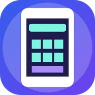
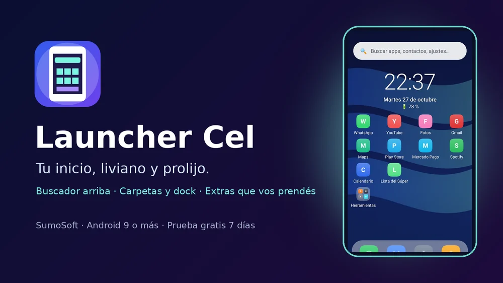
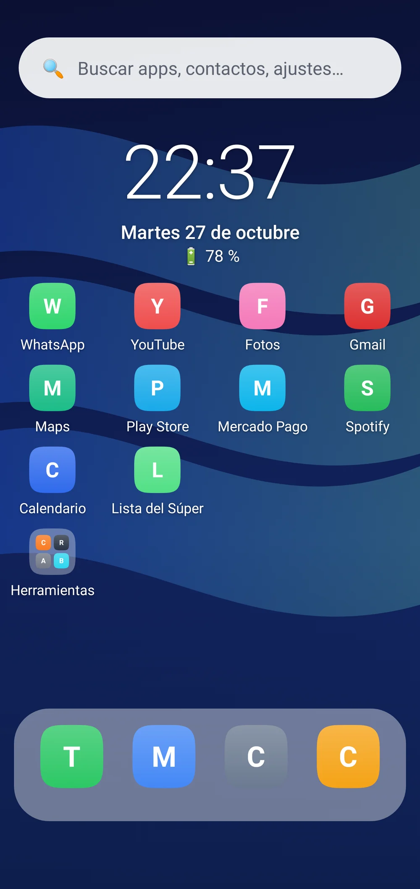
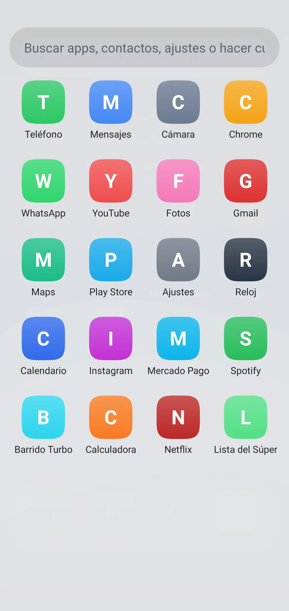
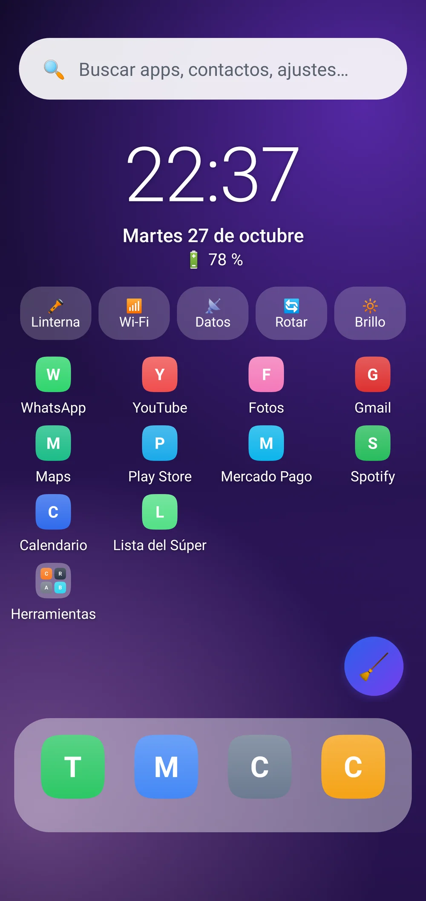
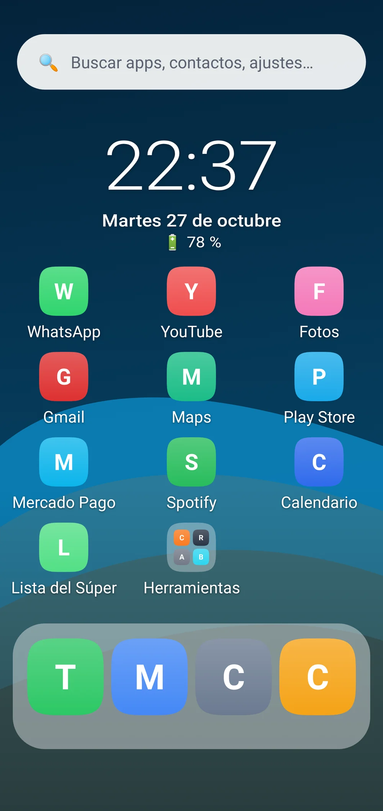
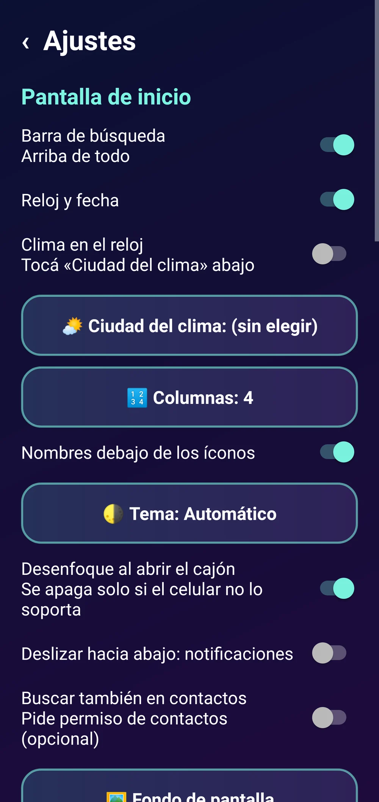
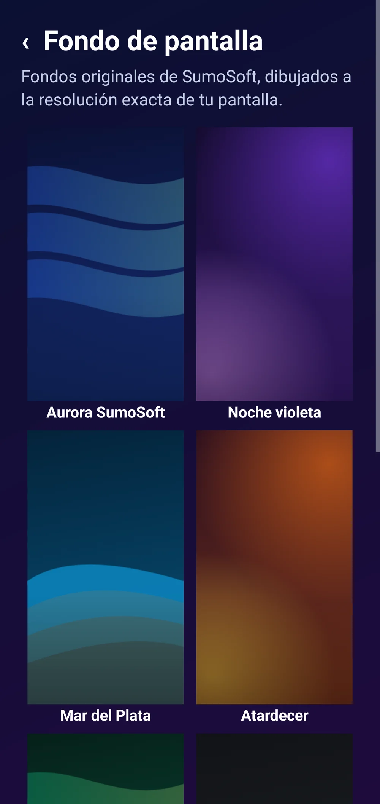
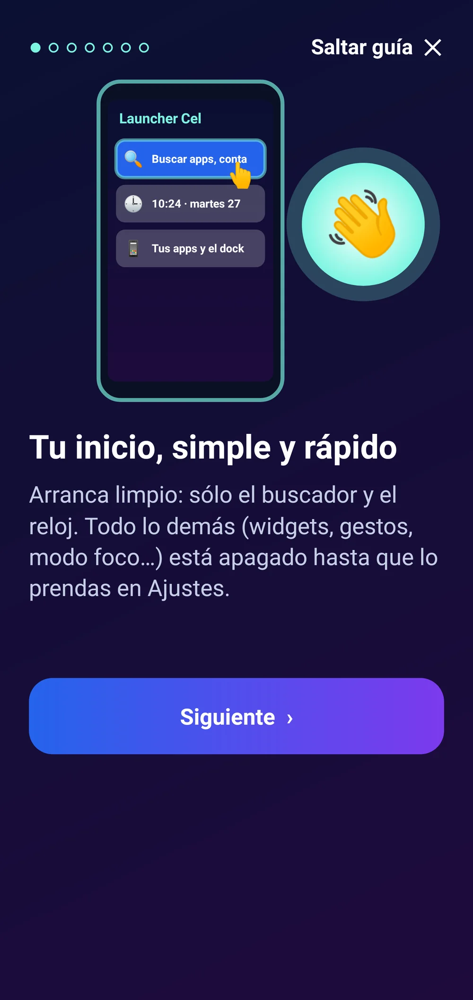

Launcher Cel
Pantalla de inicio liviana y familiar para celulares: buscador arriba, reloj, carpetas, dock y extras opcionales.
Un inicio que se siente como el de siempre, pero más liviano, más ordenado y con extras que vos decidís.
Si termina la prueba, tu inicio sigue funcionando igual; sólo se bloquean los Ajustes hasta activar la licencia. Android permite volver al inicio anterior cuando quieras (Ajustes → Apps predeterminadas). La limpieza de memoria de Android es limitada: cerrar apps en segundo plano no siempre las detiene. El clima opcional usa internet (Open-Meteo).
Para celulares Android 9 o más nuevos.
Sin publicidad. Nunca.Pagás una vez y la app es tuya: sin banners, sin videos que te hacen esperar, sin interrupciones. Por qué cobramos


Tu inicio, liviano y prolijo

Buscador arriba, reloj, carpetas y dock

Cajón de apps con buscador

Accesos rápidos y burbuja Limpiar (opcionales)

Modo simple: íconos grandes

Ajustes simples y familiares

Fondos SumoSoft

Guía al empezarLo que la hace distinta
- 🔍 Buscador arriba que encuentra apps, contactos, ajustes y hace cuentas.
- 🪶 Liviano: APK de menos de 1 MB, pensado para celulares sencillos.
- 🎛️ Todo lo extra arranca apagado: nada invasivo.
- 🎯 Modo foco que esconde redes en tu horario de trabajo o estudio.
- ✍️ Dibujá una letra para abrir una app.
- 💾 Copia de seguridad del inicio para pasarlo a otro celular.
Qué es
Launcher Cel es una pantalla de inicio para celulares Android pensada para andar fluida en equipos sencillos. Se siente como el inicio de siempre: páginas con apps y carpetas, un dock abajo y el cajón de apps deslizando hacia arriba. Arriba de todo tiene una barra de búsqueda que encuentra apps, contactos y ajustes del celular, y hace cuentas. De fábrica sólo muestra el buscador y el reloj; todo lo demás (accesos rápidos, burbuja de limpieza, modo foco, inicios según la hora, gestos de letras, íconos teñidos, modo simple) arranca apagado y lo prendés en Ajustes si lo querés.
Qué hace
- Reemplaza la pantalla de inicio: páginas con apps y carpetas, dock con hasta 5 apps y cajón con todas tus apps al deslizar hacia arriba.
- Barra de búsqueda arriba: encuentra apps (aunque escribas sin tildes), contactos (si das permiso), pantallas de Ajustes de Android y resuelve cuentas.
- Mantené apretada una app para ver sus atajos, Info, Desinstalar o Quitar; arrastrala para moverla, al dock o encima de otra para crear una carpeta. Mantené apretado el fondo para Fondo, Widgets y Ajustes.
- Widgets propios opcionales (reloj con clima, accesos rápidos, rendimiento, burbuja Limpiar) y widgets de otras apps.
- Extras apagados de fábrica: modo foco por horario, inicio según la hora, gestos de letras, íconos teñidos con el fondo, modo simple, apps ocultas, acceso a ajustes escondidos de Android y copia de seguridad del inicio.
- La limpieza abre Barrido Turbo si lo tenés instalado; si no, libera memoria de apps en segundo plano sin permisos de riesgo.
Requisitos
- Celular Android 9 o más nuevo
- Elegirla como pantalla de inicio (la guía te lleva)
- Permisos opcionales: contactos (para buscarlos) y acceso de uso (para la limpieza)
Funciones
- Barra de búsqueda arriba: apps, contactos, ajustes del celular y cuentas (1500*3)
- Páginas, carpetas y dock: mantené apretado y arrastrá
- Cajón de apps deslizando hacia arriba
- 8 fondos SumoSoft dibujados a la resolución de tu pantalla
- Formas de ícono y paquetes de íconos
- Modo foco: oculta redes o juegos en el horario que elijas
- Inicio distinto a la mañana, en el trabajo y a la noche
- Gestos: dibujá una letra para abrir una app
- Modo simple con íconos grandes
- Copia de seguridad del inicio para pasarlo a otro celular
- Todo lo extra arranca apagado
Cómo se instala
- Descargá el APK e instalalo (si Android pregunta, permití instalar desde el navegador).
- Abrila y seguí la guía; al final elegí «Launcher Cel» como pantalla de inicio.
- Mantené apretado el fondo → Ajustes para prender los extras. Para comprar: Ajustes → «Licencia y prueba» → «Comprar con Mercado Pago».
Novedades
- 1.0.1 — Ajustes, tarjetas e intro con el diseño SumoSoft y selector de colores y tema. La pantalla de inicio sobre el fondo no cambia.
- 1.0.0 — Primera versión.